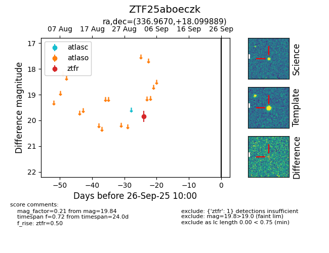

FINK: ZTF25aboeczk
Lasair: ZTF25aboeczk
ALeRCE: ZTF25aboeczk
ZTF25aboeczk (ztf,fink)
equatorial (ra, dec) = (336.9670,+18.09989)
galactic (l, b) = (81.3304,-32.93286)

last ztfr=19.84
1 ztfr detections